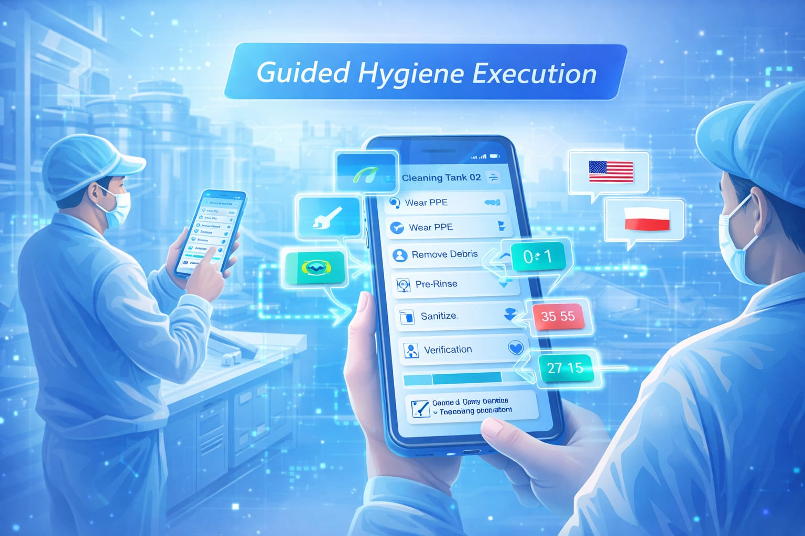
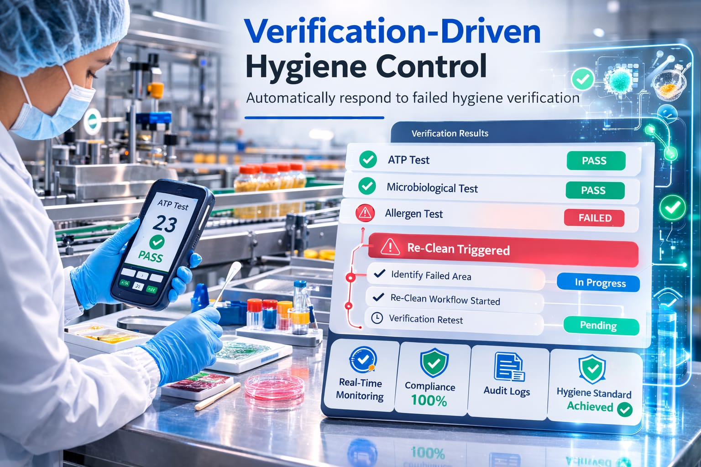
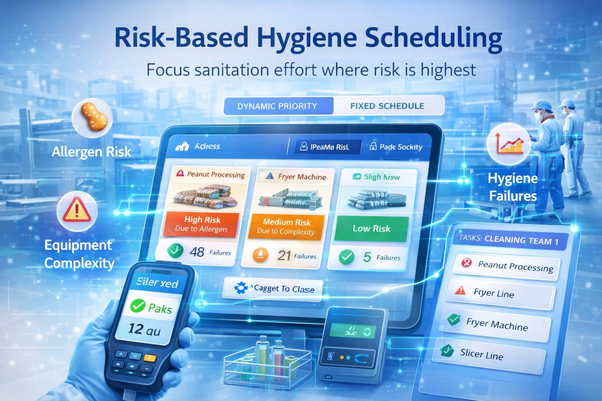

HygieneOps Copilot transforms sanitation procedures into machine-enforceable digital workflows. It guides operators, verifies cleaning results, and replaces paper logs with real-time audit-ready hygiene compliance.
HygieneOps Copilot is an advanced hygiene execution platform built for food manufacturers. The system transforms traditional sanitation procedures into machine-enforceable digital workflows that guide operators step-by-step and verify cleaning outcomes through real-time evidence and testing.
By replacing paper-based SSOP records with intelligent operational control, the platform ensures consistent sanitation execution, reduces contamination risks, and generates audit-ready compliance evidence aligned with BRCGS and HACCP standards.
Sahul Sajeevan founded HygieneOps Copilot with the vision of transforming how food manufacturers manage sanitation and compliance. The company focuses on building advanced operational technology that converts traditional hygiene procedures into intelligent, machine-enforceable workflows.
HygieneOps Copilot is designed to help manufacturing teams achieve consistent sanitation execution, real-time verification, and audit-ready compliance. By combining automation, operational intelligence, and AI-driven guidance, the platform enables food manufacturers to strengthen food safety, reduce operational risks, and maintain regulatory confidence.
LinkedInHygieneOps Copilot transforms sanitation from paper documentation into a real-time operational control system.
Existing sanitation procedures are converted from static documents into machine-enforceable digital workflows. Each cleaning task includes required steps, timers, chemical checks, and mandatory proof capture to ensure correct execution.

Operators receive step-by-step cleaning instructions directly on mobile devices in their native language. The system guides staff through correct procedures, reducing interpretation errors and ensuring consistent sanitation across shifts.
Verification tests such as ATP, allergen, and microbiological checks validate cleaning results. If a verification fails, the platform automatically triggers targeted re-clean workflows until a verified hygiene pass is achieved.
All sanitation actions, verification results, and corrective actions are recorded in a structured evidence chain. The system generates instant audit evidence packs aligned with BRCGS, HACCP, and food safety inspections.
HygieneOps Copilot transforms sanitation from static documentation into a real-time operational control system for food manufacturing.
Turn static cleaning procedures into enforceable workflows.
HygieneOps converts Sanitation Standard Operating Procedures into machine-enforceable workflow graphs with dependencies, timers, release gates and mandatory proof capture. This ensures every sanitation step is executed correctly before production can restart.

Automatically respond to failed hygiene verification.
ATP, microbiological and allergen verification tests are directly connected to cleaning workflows. If a verification fails, the system automatically triggers a targeted re-clean process until the hygiene standard is achieved.

Focus sanitation effort where risk is highest.
The platform allocates cleaning resources dynamically based on allergen risk, equipment complexity and historical hygiene failures. This ensures labour and cleaning resources are focused on high-risk assets instead of fixed time schedules.
Train operators directly on the shop floor.
The AI training studio automatically generates short multilingual micro-videos explaining how to perform cleaning tasks correctly. This helps new staff and agency workers learn procedures instantly and reduces execution errors.
Detect weak or suspicious hygiene records.
The platform analyses cleaning evidence such as timestamps, photos and verification results to identify suspicious records or missing proof. Quality teams can resolve evidence gaps before auditors review the data.
Generate audit-ready compliance reports instantly.
HygieneOps compiles complete evidence packs for BRCGS, HACCP and food safety inspections. Execution logs, verification results and corrective actions are automatically assembled into structured audit reports.
Flexible SaaS pricing for food manufacturers to digitize sanitation workflows and maintain real-time audit-ready compliance.
£1,250 / month
£2,250 / month
Starting £3,750 / month
Learn more about HygieneOps Copilot and how the platform transforms food manufacturing hygiene into a real-time operational control system.
HygieneOps Copilot is an AI-powered hygiene execution platform designed for food manufacturers. It converts sanitation procedures into machine-enforceable workflows and ensures audit-ready compliance through real-time monitoring and verification.
Many factories rely on paper logs and static procedures that cannot guarantee correct cleaning. HygieneOps Copilot replaces these systems with step-by-step digital workflows that guide operators and enforce proper sanitation execution.
The platform links verification tests such as ATP, allergen, and microbiological checks directly to cleaning workflows. If a verification fails, the system automatically generates corrective re-clean tasks until the hygiene standard is met.
HygieneOps Copilot is designed for food manufacturing companies, hygiene teams, quality assurance managers, and production supervisors who need reliable sanitation control and audit-ready compliance.
The system automatically records execution steps, verification results, and corrective actions. This creates a complete evidence chain that can generate audit-ready reports for BRCGS, HACCP, and food safety inspections.
Yes. The platform uses a cloud-based SaaS architecture that can be deployed across multiple production sites using standard mobile devices without requiring specialized hardware installation.
Have questions about HygieneOps Copilot or want to see how our AI-powered hygiene execution platform can transform sanitation and compliance in your manufacturing operations? Our team is ready to support your organization.
+44 7388285438
hygieneopsplatformuk@outlook.com
Scotland, United Kingdom